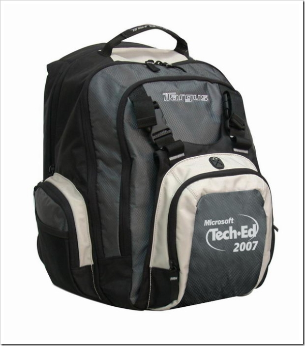

UPDATE: Oops, this isn't the speakers' bag, it's the delegate's bag!
One of the interesting discussions around TechEd each year is "What should the speaker delegate bag look like?". Well, this year, it'll look something like this:

Sign up now! The early-bird discount expires soon.